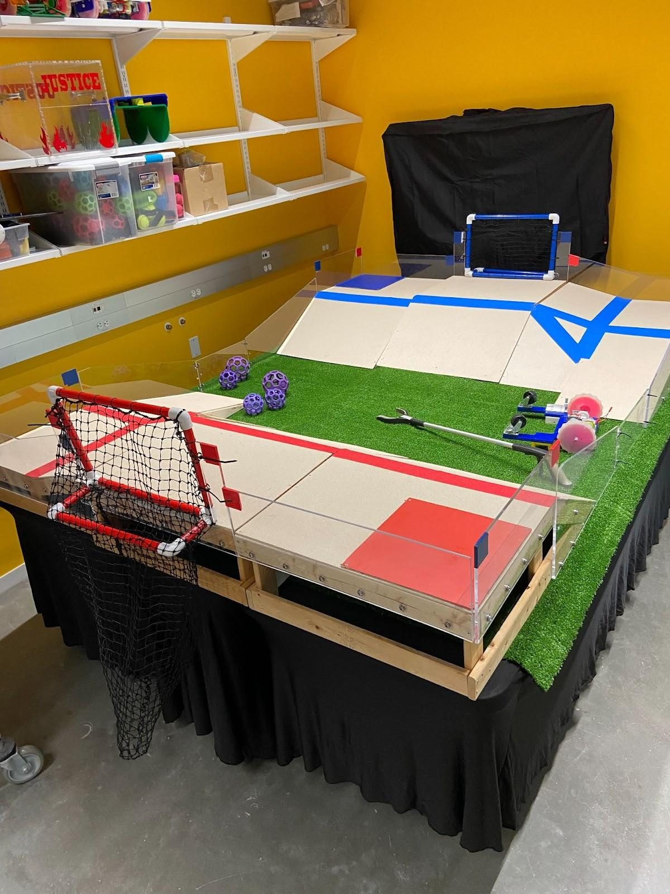
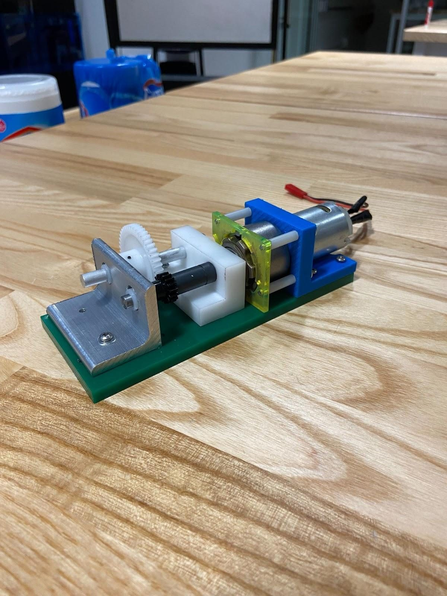
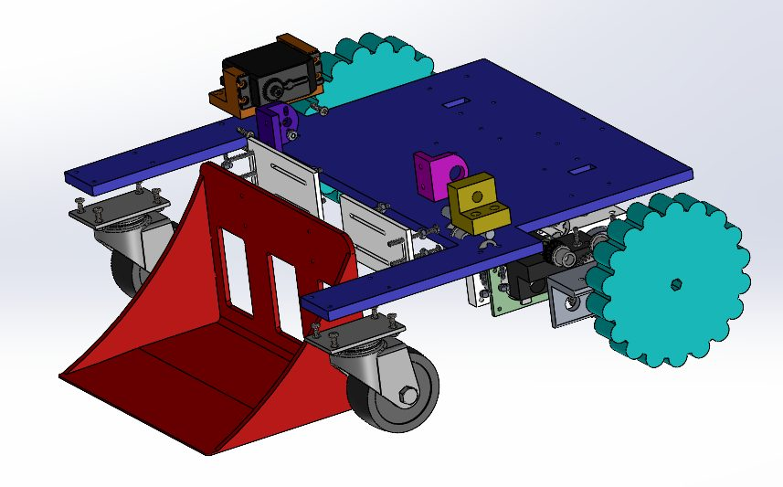
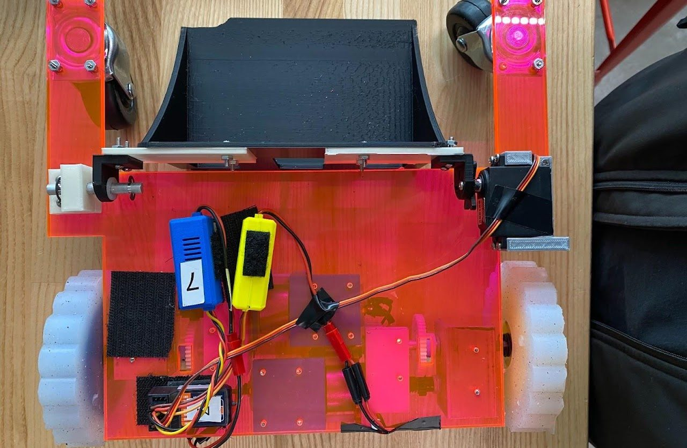
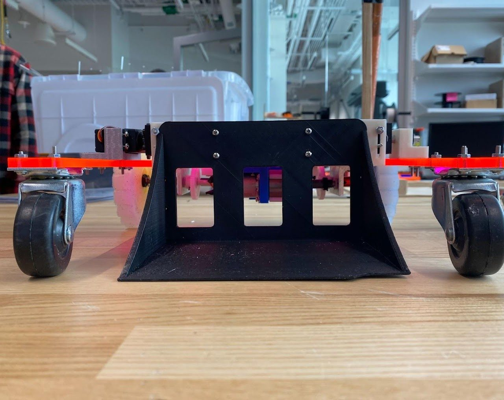
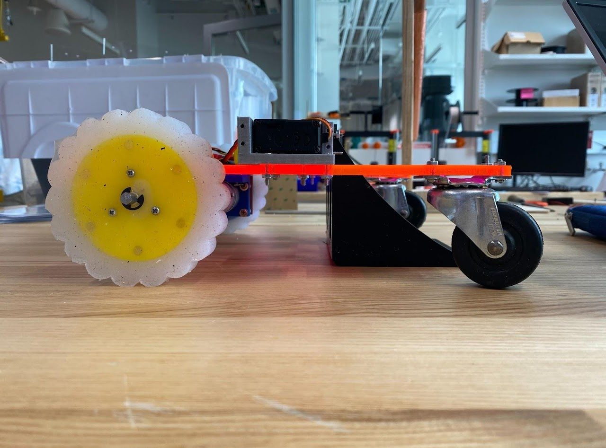
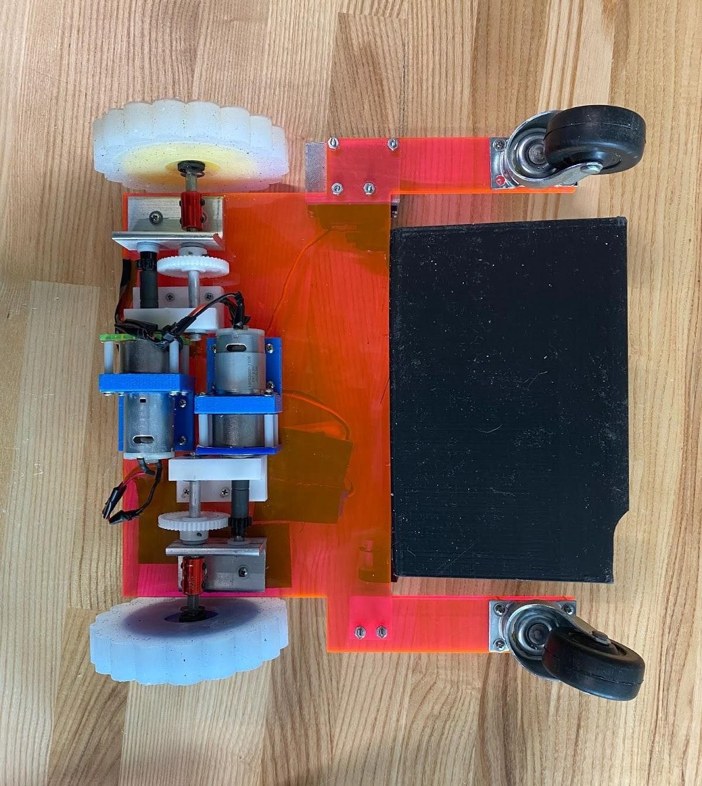

In this class, I learned CAD software (SOLIDWORKS) and various manufacturing processes in order to research, design and fabricate a remote control robot to compete in a class wide competition. The goal of the competition was to design and manufacture robots capable of maneuvering in an arena and scoring points by moving dog toys into respective nets. The robots had to fit within size constraints, use various manufacturing techniques, and demonstrate reliability and maneuverability. Our team prioritized simplicity, reliability, and mobility over other factors due to time, material, and experience constraints. We opted for a "plow" design, featuring a low center of gravity, rear-driven wheels, and a scooping mechanism controlled by a servo motor.
Manufacturing involved multiple techniques such as laser cutting, milling, 3D printing, and silicon molding. The robot was designed with a focus on stability, torque calculation for ramp traversal, and wheel optimization for traction and smooth movement. Maneuverability was enhanced by using caster wheels and a low frame, allowing for quick turns and precise navigation.
During testing and competition seeding, our robot performed well, scoring points efficiently with its scooping mechanism and superior mobility. Despite initial seeding yielding five points, the team believed further practice could significantly improve scores. The robot's reliability and maneuverability proved advantageous, and while storage was omitted for mobility reasons, future improvements could enhance efficiency and gem collection methods. Overall, our robot successfully met competition criteria, demonstrating effective design and manufacturing execution.














Group Project with Jack Shea and Emma-Kate Price
I did not come up with the project name, but I swear it was a unanimous vote